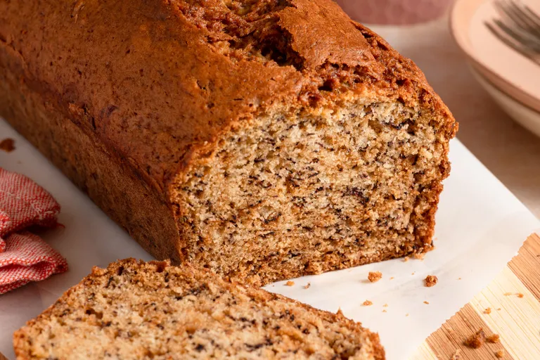

Banana bread

Description
Banana bread is a soft, moist, and lightly sweet cake-like bread made
using ripe bananas. It is a popular homemade baked recipe because it uses
simple pantry ingredients and is perfect for breakfast or snacks. The
natural sweetness of bananas gives it a rich flavor and soft texture.
Ingredients
- 3 ripe bananas (mashed)
- 1½ cups all-purpose flour
- ¾ cup sugar (adjust to taste)
- 1/3 cup melted butter (or oil)
- 1 egg
- 1 tsp baking soda
- 1 tsp vanilla essence
- A pinch of salt
- Optional: nuts (walnuts/almonds), chocolate chips
Steps
-
Preheat oven
Set oven to 175°C (350°F). Grease a loaf pan or line it with butter
paper.
-
Mash bananas
In a bowl, mash the ripe bananas until smooth with a few small lumps.
-
Mix wet ingredients
Add melted butter, sugar, egg, and vanilla essence into the mashed
bananas. Mix well.
-
Add dry ingredients
In another bowl, mix flour, baking soda, and salt. Slowly add this into
the banana mixture.
-
Combine everything
Stir gently until the batter is smooth. Do not overmix.
-
Add extras (optional)
Fold in nuts or chocolate chips if using.
-
Bake
Pour batter into a loaf pan and bake for 45–55 minutes, or until a
toothpick comes out clean.
-
Cool and serve
Let it cool for 10–15 minutes, then slice and serve.
home